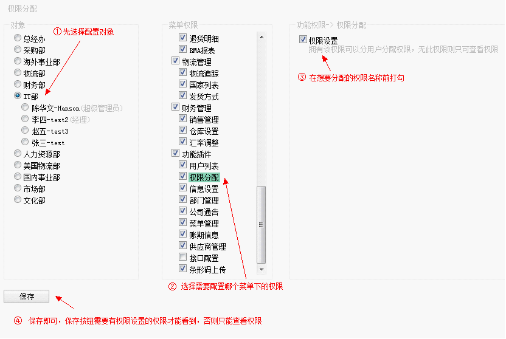
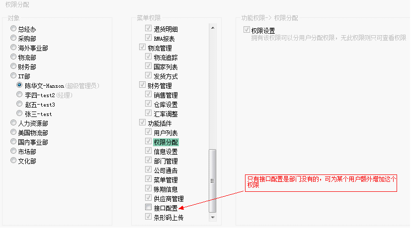

进入页面可以查看某人的权限，也可以配置权限(需要权限)，页面可见对象，菜单权限，功能权限三个框。
步骤一、选择需要配置的对象，选择部门是配置整个部门的权限，若要为部门下的某个用户配置权限，那么在展开的成员里再选择成员即可。
步骤二、上步选择了对象后，被选对象的菜单权限将被列出来，以菜单名称前是否打勾来标识是否拥有该菜单权限，若要配置菜单权限，去掉打上菜单名称前的勾勾，然后保存，若要配置该菜单下的权限，则点该菜单。
步骤三、上步选了菜单之后，功能权限框里将显示该菜单下所有可配置的权限，如下图，权限分配这个菜单下只有一个权限，去掉或打上勾，然后保存。

以上是为某个部门配置权限的示例，下面是为部门下某个人配置权限，选择部门，再选择某用户，发现原先组已经有的菜单权限，自动变成灰色，不显示灰色的，则是可以为某用户额外增加的权限。
